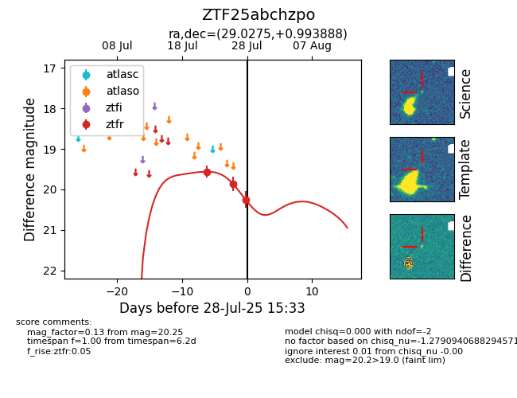

Target ZTF25abchzpo at 2025-07-28 15:33, see:
FINK: fink-portal.org/ZTF25abchzpo
Lasair: lasair-ztf.lsst.ac.uk/objects/ZTF25abchzpo
ALeRCE: alerce.online/object/ZTF25abchzpo
alt names
ZTF25abchzpo (ztf,fink)
coordinates:
equatorial (ra, dec) = (29.0275,+0.99389)
galactic (l, b) = (154.4887,-57.85995)
photometry
last ztfr=20.25
3 ztfr detections
